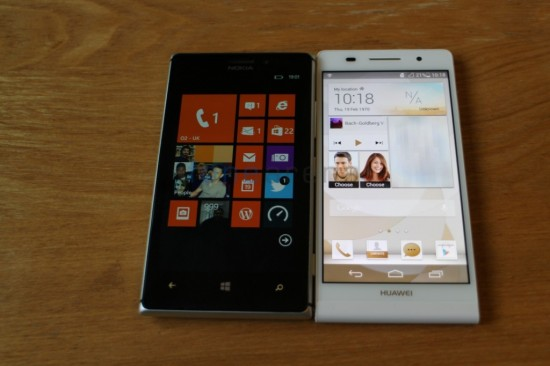

Some good stuff
Every now and again I write about some good stuff, here is my latest good stuff.
Whiteboard paint
![maxresdefault[1]](https://mclear.co.uk/wp-content/uploads/2013/10/maxresdefault1.jpg) I use whiteboard paint in my office, I have written about it before, it's still really useful. I specifically use Rust-Oleum Dry Erase Whiteboard Paint, you can buy it online or at homebase in the UK.
I use whiteboard paint in my office, I have written about it before, it's still really useful. I specifically use Rust-Oleum Dry Erase Whiteboard Paint, you can buy it online or at homebase in the UK.
Nokia 925 & Huwaei ascend

{kind=link}
Gore-tex jacket
![headwaters-gore-tex[1]](https://mclear.co.uk/wp-content/uploads/2013/10/headwaters-gore-tex1.jpg) I hate to admit it but this jacket is pretty epic, I have taken it into a bunch of wild scenarios and it has stood up each time. Well worth the cost.
I hate to admit it but this jacket is pretty epic, I have taken it into a bunch of wild scenarios and it has stood up each time. Well worth the cost.
SDR Kits Spectrum analyzer
![VNWA3-2[1]](https://mclear.co.uk/wp-content/uploads/2013/10/VNWA3-21.jpg) Not for everyone.. I use spectrum analyzers to anaylze the frequency of some electronics components I work with, the SDR-Kits one I'm using is way below the price of most on the market but does a great job.
Not for everyone.. I use spectrum analyzers to anaylze the frequency of some electronics components I work with, the SDR-Kits one I'm using is way below the price of most on the market but does a great job.
DT 770 Pros
![Beyerdynamic_DT_770_PRO_80_Ohm_-01[1]](https://mclear.co.uk/wp-content/uploads/2013/10/Beyerdynamic_DT_770_PRO_80_Ohm_-011.jpg) These headphones are great if you spend a long time in front of a computer or working at a desk, the sound quality is unmatched and the price point is fair.
These headphones are great if you spend a long time in front of a computer or working at a desk, the sound quality is unmatched and the price point is fair.
Oomlout
![tumblr_ls5099yC9k1qfpegco1_500[1]](https://mclear.co.uk/wp-content/uploads/2013/10/tumblr_ls5099yC9k1qfpegco1_5001.jpg) Oomlout isn't actually stuff, it's a place, an experience and a part of any good journey. Oomlout is technically speaking a warehouse full of electronics and bits for hackers and makers, if this sounds like you, you should visit.
Oomlout isn't actually stuff, it's a place, an experience and a part of any good journey. Oomlout is technically speaking a warehouse full of electronics and bits for hackers and makers, if this sounds like you, you should visit.
Digital door lock and key
![nfc-ring-door-lock[1]](https://mclear.co.uk/wp-content/uploads/2013/10/nfc-ring-door-lock1.jpg) So I'm kinda bias here but really, having the digital door lock and using the NFC Ring to unlock it has been useful, it's not like it's a gimmick any more, it's part of my daily life and I'm safer and less inconvenienced now than I was before, I guess that is the intention of any invention and this one ticks the boxes.
So I'm kinda bias here but really, having the digital door lock and using the NFC Ring to unlock it has been useful, it's not like it's a gimmick any more, it's part of my daily life and I'm safer and less inconvenienced now than I was before, I guess that is the intention of any invention and this one ticks the boxes.